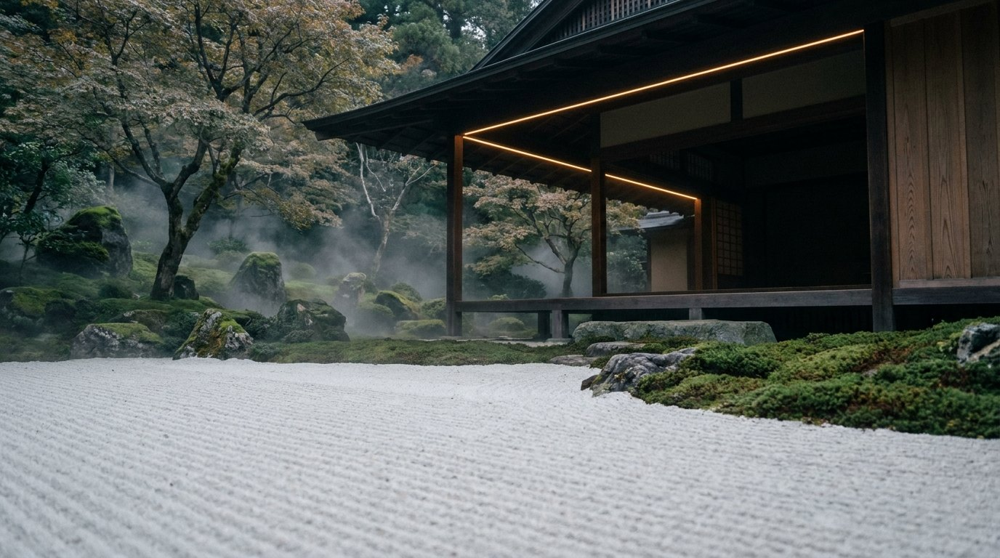
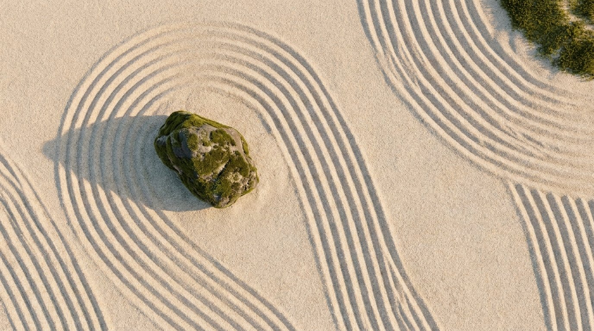

Adrian Wojtasik
Adrian Wojtasik / partner technologiczny / strony · programy · automatyzacje
Twój partner technologiczny: od prostej wizytówki po zaawansowane systemy.
Ogród i neon. Za dnia spokój, porządek i rzemiosło: mech, piasek, drewno. Nocą światło nowoczesnej technologii, które pracuje dla firmy po godzinach. Najpierw rozumiem Twoją firmę, potem buduję jeden pomysł, który klienci zapamiętają.





MetodaRozmowa→Research→Jeden pomysł→Projekt→Budowa→Publikacja→Opieka
Sumi#121311
Washi#F2EFE7
Piasek#DCD3C1
Mech#33503F
Hinoki#C9A46A
Lampion#FFB547
Bursztyn akcji#8A5A12
Adrian Wojtasik · system marki · projekt do oceny właścicielskiej1 / 2